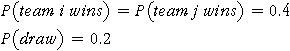

Modelling a league
In any game between evenly-matched opponents, there is a considerable chance element in the outcome — we cannot predict the result of the match. We will use a simulation to investigate how much a league table reflects this randomness and how much the results depend on the abilities of the different teams.
The first stage in any simulation is to produce a model for the process. In the league table example, such a model defines the probabilities of winning, drawing and losing for each match during the season. A good model would express these probabilities in terms of different abilities for the various teams (perhaps based on their results from the previous year), a home-team advantage and changes during the season. However a much simpler model can still provide useful information.
We will model a league with 10 teams. We initially assume that the two teams in each match are equally likely to win. More precisely, in any match between teams i and j, we assume that

Click Run League to perform a simulation in which each pair of teams plays two matches (one at each team's home ground). The table on the left shows the winners of all 90 matches that were played with a cross representing a draw. The row and column totals show the total points for each team in its home and away matches respectively. (Three points are awarded for a win and one for a draw.)
The table in the centre shows the placings of the teams at the end of the season.
Is the best team likely to be top of the league?
We will concentrate on the final position of Team A in the league — its rank is shown by a cross in the dot plot on the right. (A rank of 1 means that the team was top or top equal in the league.)
Click Accumulate and run the simulation several more times. Observe that Team A has (almost) the same chance of being in any position in the league at the end of the season.
The slider under the diagram allows us to adjust the probability of Team A winning its matches. (The other teams remain evenly matched.) Give Team A a probability of 0.55 of winning its matches — more than double its probability of losing — then repeat the simulation 100 times.
Observe that Team A often wins the league, but not always. In almost half of our simulated seasons, another team beats it, despite Team A's advantage! Indeed, you will probably have observed that Team A's final placing was in the bottom half of the league in several simulated seasons!
We clearly need to be careful about interpreting a team's placing as being due to skill, rather than chance!
From the results of several runs of a simulation, we often get a good idea of the properties of our model.
However there is some uncertainty due to the randomness of the sampling process.